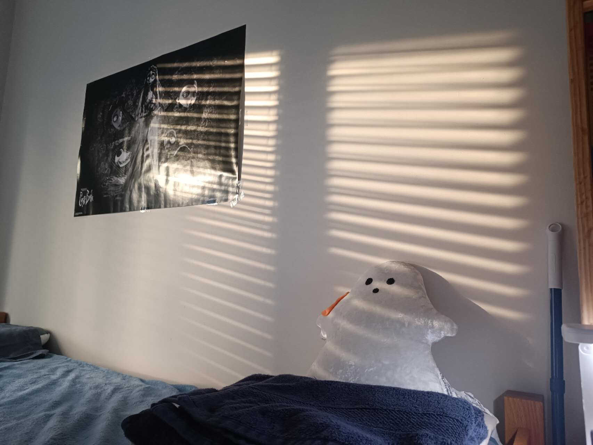

More About Me Page


The images were taken at my last Residence Hall -- Brittany Hall.
My weekend
After finishing a week's class and studying, what I'm most looking forward to is having a relaxing weekend.
For me, it's a great period of relaxing time for more sleep, and
it's a great time for room reorganization.
Spending replanning room setup has been a stress relief practice for me.
I'm really looking forward to the following weekend! :D
My Summer Residence Hall
For studying during the Summer Session, I moved to a new Residence Hall -- Rubin Hall. Recently, I'm trying to familiarize myself with its facilities and its floor plan. It's interesting to know that there's study space on the second floor, with particular rooms such as Music Rooms and Meeting Rooms. Apart from that, it's also very interesting to know that there's a mini library on the second floor.